Ce que contient cette page
La règle de pénétration est lue par le jeu à chaque tir qui touche une armure, et elle est la seule chose qui décide si votre cartouche passe ou s’arrête dans la plaque. Cette page part de la règle publiée par l’éditeur, explique ce que chaque statistique de cartouche signifie, classe les deux cents munitions de l’export par classe d’armure atteinte, et donne les prix d’achat observés.
200
Cartouches. Trente et un calibres, de la 9 x 18 PM au 12,7 x 99, plus sept grenades à main traitées à part.
154
Vendues en magasin. Chacune avec un niveau de fidélité et un prix. Les quarante-six autres ne s’achètent qu’en raid ou au marché.
15
Coups multiples. Ces cartouches frappent en un seul tir le nombre de projectiles indiqué, pas un projectile unique.
La règle de pénétration
Le correctif 0.14.6.0 du 25 avril 2024 a redéfini la manière dont une cartouche traverse une armure. L’éditeur y énonce trois règles, reprises ici telles qu’elles ont été publiées :
- La traversée est garantie lorsque la pénétration de la cartouche dépasse de quinze points ou plus la durabilité effective de l’armure.
- La durabilité effective d’une armure intacte vaut approximativement sa classe multipliée par dix ; elle diminue à mesure que l’armure perd ses points de durabilité.
- La pénétration se dégrade quand la balle perd de la vitesse : beaucoup de cartouches partent avec une petite variation initiale, et la pénétration baisse au contact de l’armure, d’une zone du corps ou d’un couvert.
Le même correctif a introduit une règle pour le corps : la balle traverse toujours une zone du corps si sa pénétration dépasse le seuil de cette zone, fixé à 20 pour la tête, les avant-bras, les épaules, les mollets et les cuisses, en perdant au passage une partie de ses dégâts et de sa pénétration.
Comment lire la classe atteinte. Une classe d’armure est atteinte quand la pénétration de la cartouche atteint dix fois son numéro : une classe 4 correspond à une pénétration de 40. C’est une lecture dérivée, pas une valeur publiée par l’éditeur : elle sert à comparer les cartouches entre elles, elle ne garantit rien sur une armure usée. La traversée garantie, elle, exige quinze points de plus.
Autrement dit : contre une classe 4 intacte, il faut environ 55 de pénétration pour être sûr de passer ; entre 40 et 55, la chance existe mais n’est pas acquise ; sous 40, la cartouche s’arrête dans la plaque. C’est la règle qui rend le choix de la munition prioritaire sur celui de l’arme : les dégâts au corps ne dépendent que de la cartouche, jamais du canon qui l’a tirée.
Chaque statistique expliquée
L’inspecteur du jeu affiche la plupart de ces valeurs directement sur la cartouche depuis le correctif 0.14.5.0. Voici ce qu’elles mesurent réellement, et ce que l’éditeur a dit de chacune.
| Statistique | Ce qu’elle mesure | Ce que l’éditeur en dit |
|---|---|---|
| Pénétration | La capacité de la cartouche à franchir l’armure. C’est la valeur que le jeu oppose à la durabilité effective de la plaque. | « La pénétration va de 15 points au-dessus de la durabilité effective à une traversée garantie ; pour une armure intacte, la durabilité effective vaut environ la classe multipliée par dix. » |
| Dégâts | Les dégâts infligés à la partie du corps touchée, par projectile. Un tir multiple en applique le nombre indiqué. | Les dégâts diminuent avec la distance, et un canon plus long augmente la vitesse de la balle, donc ses dégâts et sa pénétration. |
| Dégâts d’armure | La part des dégâts de la cartouche qui érode l’armure touchée : c’est elle qui détermine la vitesse d’usure de la plaque. | Le matériau de l’armure change la quantité de durabilité perdue. |
| Fragmentation | La chance que la cartouche se fragmente dans le corps, ce qui change les dégâts appliqués. Cent soixante-douze des deux cents cartouches ont une valeur au-dessus de zéro. | Les notes récentes de l’éditeur ne décrivent pas cette valeur. |
| Vitesse initiale | La vitesse de sortie, en mètres par seconde, de 20 à 1 220 dans l’export. | La pénétration baisse à mesure que la balle ralentit. |
| Traçante | La cartouche laisse une trace visible. Vingt-six cartouches de l’export en portent une, dont les sept fusées éclairantes. | La couleur est la seule différence entre deux traçantes. |
| Ricochet | La chance que la cartouche ricoche sur une surface ou une armure. | Chaque pièce d’armure a ses propres valeurs de ricochet. |
| Hémorragie | La chance ajoutée de provoquer un saignement, léger ou lourd, selon la cartouche. | Certaines cartouches causent des saignements plus souvent que d’autres. |
| Précision et recul | Les modificateurs que la cartouche applique à la précision et au recul de l’arme qui la tire. | Ces modificateurs ne sont pas décrits dans les notes récentes. |
Les six classes d’armure
Les armures vont de la classe 1 à la classe 6, en chiffres romains depuis le correctif 0.14.0.0 du 27 décembre 2023 qui a introduit les plaques balistiques et les zones d’armure. Le tableau croise ces classes avec les deux cents cartouches de l’export : combien atteignent chaque classe, et combien franchissent le seuil de traversée garantie.
| Classe d’armure | Durabilité effective (intacte) | Pénétration franchissant | Cartouches à la classe | Cartouches franchissant | Exemples |
|---|---|---|---|---|---|
| Classe 1 | ≈ 10 | ≥ 25 | 155 | 96 | AP-M, EKO, AP, FMJ |
| Classe 2 | ≈ 20 | ≥ 35 | 112 | 61 | AP-M, AP, AP-20, FMJ B |
| Classe 3 | ≈ 30 | ≥ 45 | 80 | 29 | FMJ B, PS12B, M903, M33 |
| Classe 4 | ≈ 40 | ≥ 55 | 43 | 14 | FMJ B, M903, M33, PPBS |
| Classe 5 | ≈ 50 | ≥ 65 | 19 | 4 | M903, M993, BS, AP |
| Classe 6 | ≈ 60 | ≥ 75 | 7 | 2 | M903, AP |
Marché et courtiers
Depuis le correctif 0.15.0.0 du 20 août 2024, les marchands ne vendent plus rien de classe 6 : ces pièces ne sortent que des raids. Les plaques de classe 5 et 6 sont par ailleurs interdites de mise en vente sur le marché depuis le correctif 0.14.0.0.
Durée d’armure
La durabilité effective baisse quand l’armure perd ses points. Une classe 4 déjà abîmée s’arrête plus facilement qu’une classe 4 neuve : c’est pourquoi la même cartouche passe sur une cible fraîche et rate sur une cible usée.
Par calibre
Une arme ne tire qu’un seul calibre : comparer deux cartouches de calibres différents n’a pas de sens. Le tableau donne, pour chacun des trente et un calibres, la plage de pénétration et de dégâts observée, la cartouche la plus pénétrante et le nombre de références achetables en magasin.
| Calibre | Cartouches | Pénétration | Dégâts | Cartouche la plus pénétrante | En magasin |
|---|---|---|---|---|---|
| .366 TKM | 4 | 14 – 42 | 73 – 110 | .366 TKM AP-M | 3 / 4 |
| 11,43 x 23 mm ACP | 5 | 3 – 38 | 66 – 130 | .45 ACP AP | 5 / 5 |
| 12 gauges | 17 | 1 – 37 | 25 – 265 | 12/70 slug AP-20 | 16 / 17 |
| 12,7 x 33 mm | 5 | 12 – 57 | 85 – 147 | .50 AE FMJ Bull | 4 / 5 |
| 12,7 x 55 mm | 3 | 10 – 46 | 102 – 165 | 12,7 x 55 mm PS12B | 3 / 3 |
| 12,7 x 99 mm | 4 | 34 – 115 | 160 – 260 | .50 BMG M903 SLAP | 3 / 4 |
| 20 gauges | 11 | 1 – 30 | 20 – 198 | 20/70 slug perforant TSS | 8 / 11 |
| 20 x 1 mm | 1 | 0 – 0 | 1 – 1 | Disque 20 x 1 mm | 1 / 1 |
| 23 x 75 mm | 4 | 0 – 39 | 0 – 192 | 23 x 75 mm à slug Barrikada | 4 / 4 |
| 26 x 75 mm | 7 | 0 – 0 | 37 – 40 | Fusée éclairante (bleue) | 1 / 7 |
| 4,0 x 46 mm | 6 | 1 – 5 | 160 – 199 | 40 x 46 mm M576 (MP-APERS) | 1 / 6 |
| 4,6 x 30 mm | 5 | 18 – 53 | 35 – 65 | 4,6 x 30 mm AP SX | 4 / 5 |
| 40 mm RU | 1 | 0 – 0 | 199 – 199 | 40 x 53 mm VOG-25 | 1 / 1 |
| 5,45 x 39 mm | 13 | 9 – 62 | 37 – 76 | 5,45 x 39 mm PPBS gs Igolnik | 9 / 13 |
| 5,56 x 45 mm NATO | 11 | 3 – 57 | 38 – 88 | 5,56 x 45 mm SSA AP | 7 / 11 |
| 5,7 x 28 mm | 7 | 8 – 37 | 49 – 98 | 5,7 x 28 mm SS190 | 7 / 7 |
| 5,8 x 42 mm | 4 | 33 – 52 | 46 – 57 | 5.8x42mm DVC12 | 2 / 4 |
| 6,8 x 51 mm | 2 | 36 – 47 | 72 – 80 | 6,8 x 51 mm SIG Hybrid | 2 / 2 |
| 7,62 x 25 mm TT | 10 | 7 – 37 | 32 – 66 | 7.62x25mm TT M995 | 9 / 10 |
| 7,62 x 35 mm | 6 | 14 – 48 | 51 – 90 | .300 AAC Blackout AP | 4 / 6 |
| 7,62 x 39 mm | 9 | 15 – 58 | 53 – 80 | 7,62 x 39 mm MAI AP | 7 / 9 |
| 7,62 x 51 mm NATO | 8 | 15 – 65 | 70 – 105 | 7,62 x 51 mm M993 | 4 / 8 |
| 7,62 x 54 mm R | 9 | 26 – 70 | 72 – 102 | 7,62 x 54 mm R BS gs | 5 / 9 |
| 7,84 x 49 mm | 2 | 24 – 42 | 80 – 96 | .308 ME | 2 / 2 |
| 8,6 x 70 mm | 4 | 18 – 79 | 115 – 196 | .338 Lapua Magnum AP | 3 / 4 |
| 9 x 18 mm PM | 14 | 1 – 28 | 40 – 77 | 9 x 18 mm PM PBM gzh | 14 / 14 |
| 9 x 19 mm Para | 9 | 2 – 39 | 44 – 102 | 9 x 19 mm PBP gzh | 9 / 9 |
| 9 x 21 mm | 6 | 15 – 38 | 49 – 80 | 9 x 21 mm 7N42 Zubilo | 6 / 6 |
| 9 x 33 mm R | 4 | 12 – 35 | 70 – 108 | .357 Magnum FMJ | 4 / 4 |
| 9 x 39 mm | 6 | 17 – 54 | 58 – 75 | 9 x 39 mm BP | 4 / 6 |
| 9,3 x 64 mm | 3 | 37 – 56 | 108 – 129 | 9,3 x 64 mm 7N33 | 2 / 3 |
Les cartouches traçantes
Une traçante se voit à l’œil nu : sa couleur est la seule différence avec une cartouche ordinaire, et son comportement reste celui de sa classe. Le tableau ci-dessous reprend les vingt-six traçantes de l’export, dont les sept fusées éclairantes, qui apparaissent en jaune.
| Image | Cartouche | Calibre | Dégâts | Pénétration | Dégâts d’armure | Type | Projectiles | Fragmentation |
|---|---|---|---|---|---|---|---|---|
 | .45 ACP Lasermatch FMJ | 11,43 x 23 mm ACP | 76 | 19 | 37 | bullet | 1 | 0.01 |
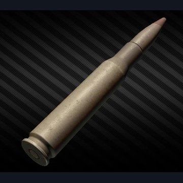 | .50 BMG M21 | 12,7 x 99 mm | 220 | 45 | 55 | bullet | 1 | 0.07 |
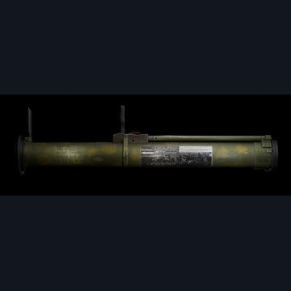 | Fusée éclairante (bleue) | 26 x 75 mm | 40 | 0 | 60 | bullet | 1 | 0 |
 | Fusée éclairante (Nouvel An) | 26 x 75 mm | 40 | 0 | 60 | bullet | 1 | 0 |
| 26 x 75 mm à fusée éclairante (verte) | 26 x 75 mm | 37 | 0 | 60 | bullet | 1 | 0 | |
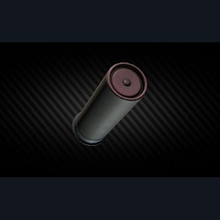 | 26 x 75 mm à fusée éclairante (rouge) | 26 x 75 mm | 37 | 0 | 60 | bullet | 1 | 0 |
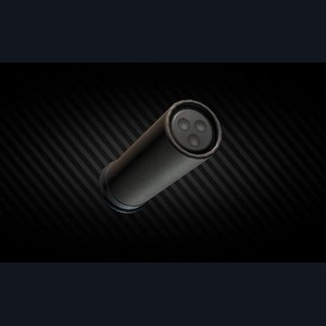 | 26 x 75 mm à fusée éclairante (blanche) | 26 x 75 mm | 37 | 0 | 60 | bullet | 1 | 0 |
 | 26 x 75 mm à fusée éclairante (jaune) | 26 x 75 mm | 37 | 0 | 60 | bullet | 1 | 0 |
 | 26 x 75 mm à fusée éclairante (vert acide) | 26 x 75 mm | 37 | 0 | 60 | bullet | 1 | 0 |
 | 5,45 x 39 mm BT gs | 5,45 x 39 mm | 54 | 37 | 44 | bullet | 1 | 0.164 |
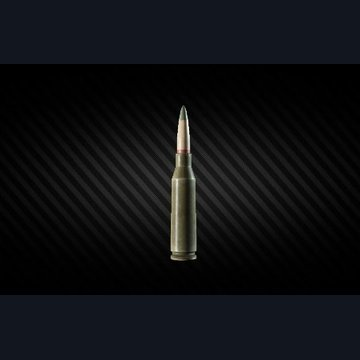 | 5,45 x 39 mm T gs | 5,45 x 39 mm | 59 | 20 | 36 | bullet | 1 | 0.16 |
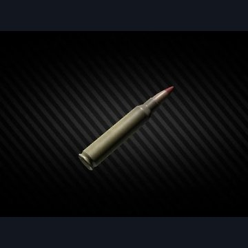 | 5,56 x 45 mm M856A1 | 5,56 x 45 mm NATO | 52 | 38 | 44 | bullet | 1 | 0.428 |
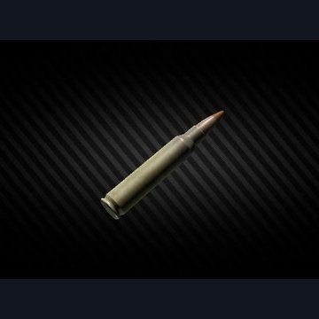 | 5,56 x 45 mm M856 | 5,56 x 45 mm NATO | 60 | 18 | 26 | bullet | 1 | 0.328 |
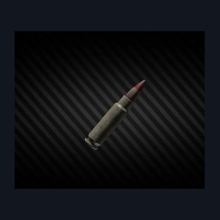 | 5,7 x 28 mm L191 | 5,7 x 28 mm | 53 | 33 | 41 | bullet | 1 | 0.2 |
 | 5.8x42mm DVX12 | 5,8 x 42 mm | 48 | 47 | 54 | bullet | 1 | 0.5 |
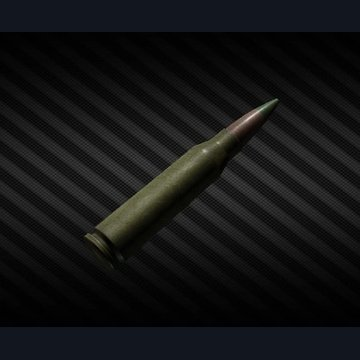 | 5.8x42mm DBX95 | 5,8 x 42 mm | 57 | 33 | 40 | bullet | 1 | 0.5 |
 | 7.62x25mm TT M856A1 | 7,62 x 25 mm TT | 36 | 27 | 31 | bullet | 1 | 0.08 |
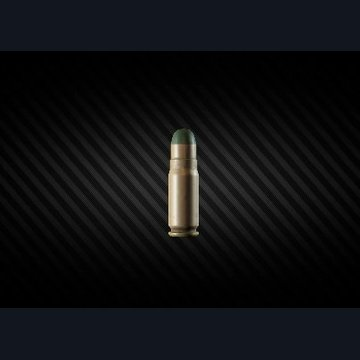 | 7,62 x 25 mm TT PT gzh | 7,62 x 25 mm TT | 55 | 18 | 34 | bullet | 1 | 0.166 |
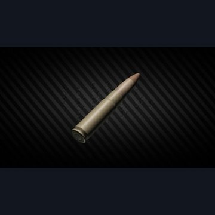 | .300 AAC Blackout M62 traçante | 7,62 x 35 mm | 54 | 36 | 40 | bullet | 1 | 0.2 |
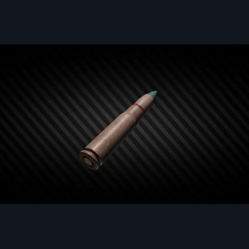 | 7,62 x 39 mm T-45M1 gzh | 7,62 x 39 mm | 65 | 30 | 46 | bullet | 1 | 0.12 |
 | 7,62 x 51 mm M62 traçante | 7,62 x 51 mm NATO | 82 | 42 | 65 | bullet | 1 | 0.14 |
 | 7,62 x 54 mm R BT gzh | 7,62 x 54 mm R | 78 | 55 | 87 | bullet | 1 | 0.081 |
 | 7,62 x 54 mm R T-46M | 7,62 x 54 mm R | 82 | 41 | 83 | bullet | 1 | 0.18 |
| 9 x 18 mm PM PPT gzh | 9 x 18 mm PM | 59 | 8 | 22 | bullet | 1 | 0.166 | |
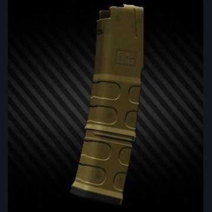 | 9 x 19 mm T | 9 x 19 mm Para | 58 | 14 | 33 | bullet | 1 | 0.15 |
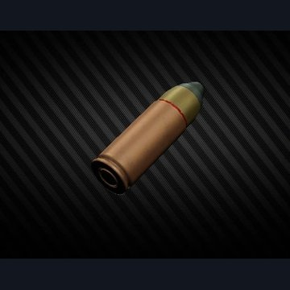 | 9 x 21 mm BT gzh | 9 x 21 mm | 52 | 32 | 42 | bullet | 1 | 0.2 |
Les grenades à main
Les sept grenades de l’export ne suivent pas la règle de pénétration : elles agissent par explosion, avec un rayon et un nombre de fragments. Elles sont listées à part.
| Grenade | Type | Délai (s) | Rayon d’explosion (m) | Fragments | Rayon de contusion (m) |
|---|---|---|---|---|---|
| Grenade à main RGD-5 | Grenade | 3.5 | 3 – 7 | 70 | 10 |
| Grenade à main F-1 | Grenade | 3.5 | 3 – 7 | 90 | 12 |
| Grenade à main M67 | Grenade | 5 | 4 – 8 | 75 | 11 |
| Grenade incapacitante Zarya | Flashbang | 2 | 0 – 0 | 0 | 10 |
| Grenade fumigène RDG-2B | Smoke | 3.5 | 0 – 0 | 0 | 0 |
| Grenade à main artisanale VOG-17 Khattabka | Grenade | 3 | 2 – 6 | 100 | 9 |
| Grenade à main artisanale VOG-25 Khattabka | Grenade | 2 | 2 – 7 | 35 | 7 |
Où acheter, à quel prix
Les prix ci-dessous sont ceux relevés dans l’export au 18 novembre 2026. Ils ne sont pas garantis : les marchands réapprovisionnent, les stocks changent, et certaines offres sont libellées en dollars plutôt qu’en roubles.
| Niveau de fidélité | Cartouches | Prix en roubles | Répartition par marchand |
|---|---|---|---|
| Niveau 1 | 60 | 2 – 4 212 | Jaeger (28), Prapor (20), Peacekeeper (7), Skier (6), Mechanic (5) |
| Niveau 2 | 42 | 40 – 891 | Prapor (16), Jaeger (13), Mechanic (5), Peacekeeper (5), Skier (3) |
| Niveau 3 | 27 | 107 – 27 540 | Prapor (9), Jaeger (7), Peacekeeper (5), Mechanic (4), Skier (3) |
| Niveau 4 | 25 | 525 – 2 830 | Peacekeeper (10), Prapor (10), Mechanic (3), Jaeger (2) |
| Sans offre en magasin | 46 | — | prix de marché uniquement |
Le repère qui compte le plus. Une cartouche achetée en magasin coûte une fraction de son prix au marché, et une cartouche vendue en magasin rapporte plus que le même article acheté au marché. Les quarante-six cartouches sans offre en magasin ne sont donc pas des cartouches inutiles : ce sont celles qu’il faut chercher en raid, et qui se revendent bien.
Sources et limites
La règle de pénétration vient des notes de l’éditeur pour les correctifs 0.14.0.0, 0.14.5.0 et 0.14.6.0. Les chiffres de cartouche viennent de l’export communautaire du 18 novembre 2026. Les seuils de classe affichés dans cette page sont une lecture dérivée de la règle de l’éditeur, et les classements communautaires sont signalés comme retours de joueurs, jamais comme source de chiffres.
- Tarkov.dev — items, équipement, munitions et skills (PvP ; autres modes via le catalogue)Données communautaires
- Ballistics — mécanique en jeuWiki communautaire
- .45 ACP AP — fiche détaillée de référenceWiki communautaire
- Patch 0.14.6.0 — refonte de la pénétration (25 avril 2024)Éditeur
- Patch 0.14.5.0 — dégâts et pénétration dans l'inspecteur (3 avril 2024)Éditeur
- Patch 0.14.0.0 — plaques balistiques, zones d'armure et classes (27 décembre 2023)Éditeur
- How Armor Works in Tarkov — classes, plaques, pénétrationGuide communautaire
- Tarkov Ammo Stats Explained — chaque statistique expliquéeGuide communautaire
- LePreStore — classement communautaire des munitions (patch 1.1.5)Guide communautaire